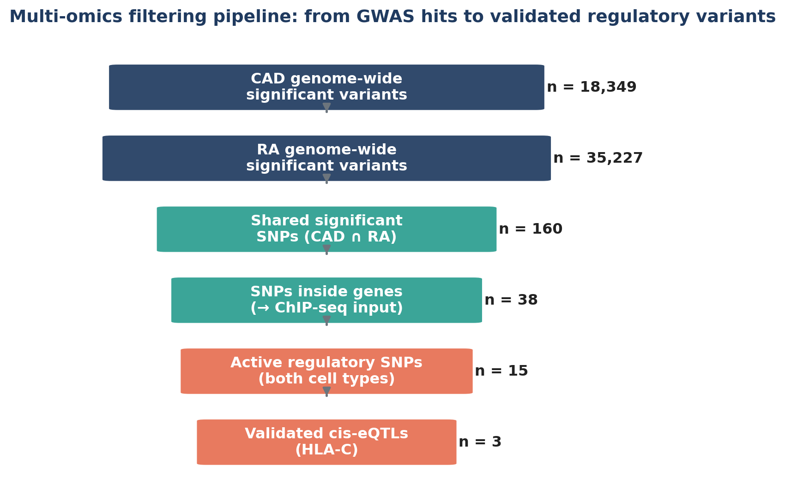
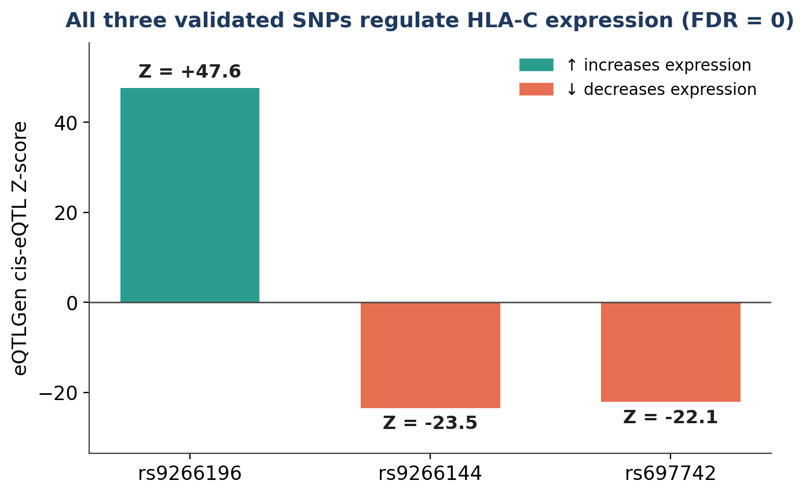

Shared genetic architecture of coronary artery disease and rheumatoid arthritis
People with rheumatoid arthritis are more likely to develop heart disease. I wanted to know whether the two diseases share a genetic basis, and what that shared signal is doing at the molecular level.
- Type
- Independent project
- Data
- GWAS Catalog, ENCODE, eQTLGen
- Genome build
- GRCh37 / hg19
- Code
- GitHub ↗

What I did
I started from two large public GWAS: coronary artery disease (Aragam et al. 2022, over a million people) and rheumatoid arthritis (Ishigaki et al. 2022, five ancestry groups). Filtering both at genome-wide significance (p < 5×10⁻⁸) gave 18,349 CAD and 35,227 RA variants, and 160 of them were significant in both diseases.
I mapped those 160 SNPs to their nearest genes with bedtools, which left 38 SNPs sitting directly inside a gene. Next I asked whether those SNPs fall on "switched-on" DNA. I used H3K27ac ChIP-seq from ENCODE for two cell types: CD4+ T cells, which attack joint tissue in RA, and CD14+ monocytes, which become the cells that build arterial plaque in CAD. 15 SNPs were active in both. Finally, I checked those 15 against eQTLGen (31,684 blood samples) to see which ones actually change how much a gene is expressed.
The whole analysis runs as eight numbered Bash scripts using awk, sort, comm, grep and bedtools, so it can be rerun from scratch and give the same numbers.
What I found
The shared SNPs piled up in the HLA region on chromosome 6 (HLA-B, HLA-DRB1, HLA-DQA1, HLA-A), the immune system's control center. By the end of the funnel, all three validated variants regulate the same gene, HLA-C. The strongest, rs9266196, has a Z-score of about 47.6.
Going from 53,000 variants to three that tell the same story suggests the overlap between RA and CAD is a specific immune-regulatory signal, not noise. It points to a shared genetic root, rather than RA simply causing heart disease through years of inflammation.

Limitations and next steps
- The nearest gene is not always the causal gene. The eQTL step is there to add real evidence, but it doesn't settle it.
- This is a strong chain of evidence, not proof. Showing causation would take an experiment, such as editing the SNP in cells and measuring HLA-C.
- I didn't stratify by ancestry. Next I'd test each ancestry group separately and add more cell types and tissues.